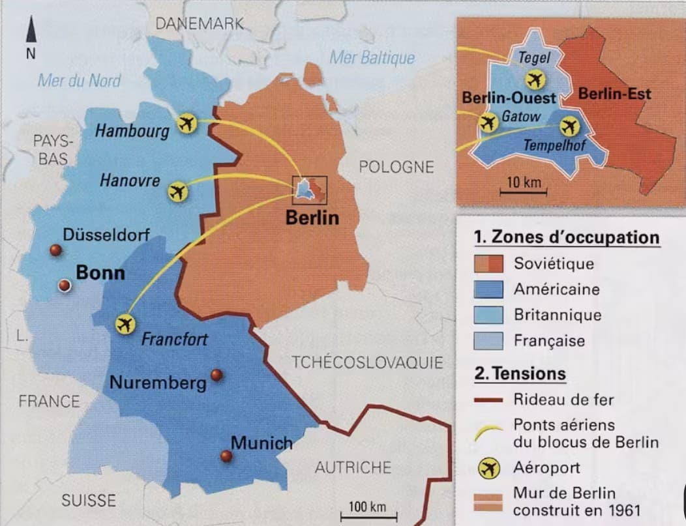
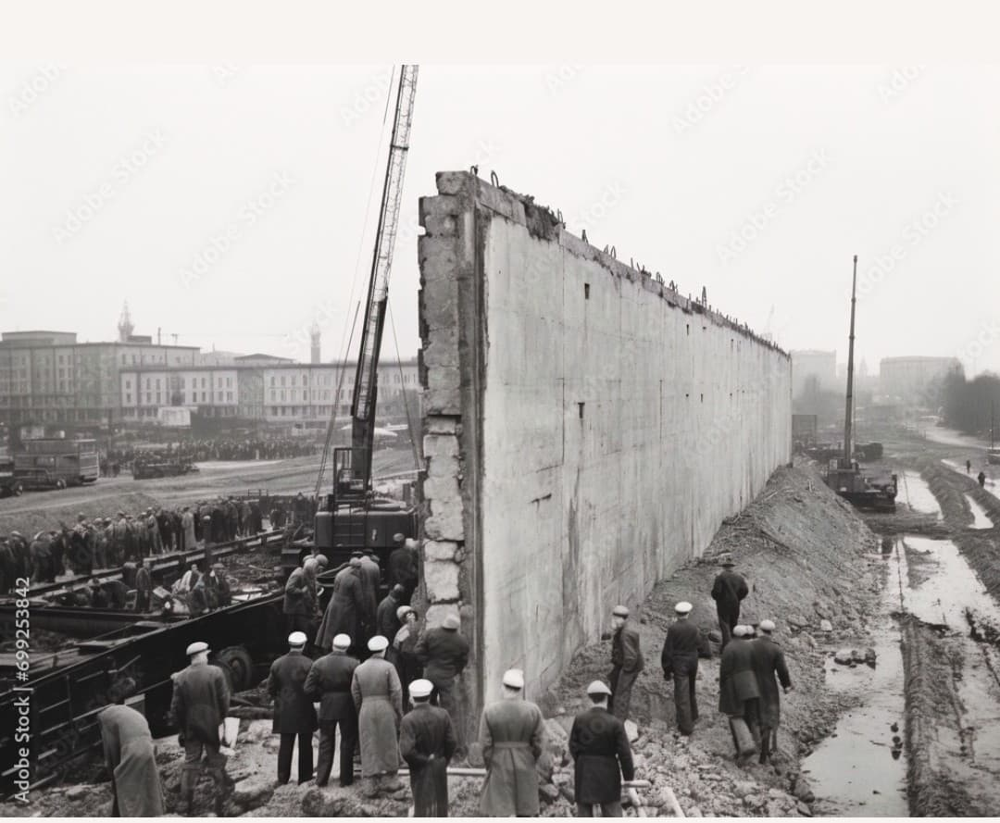
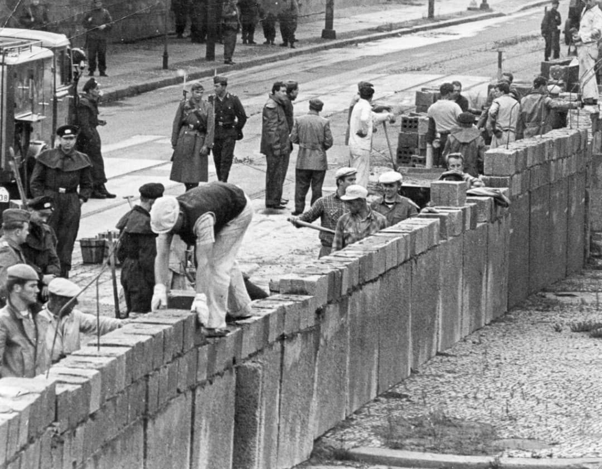
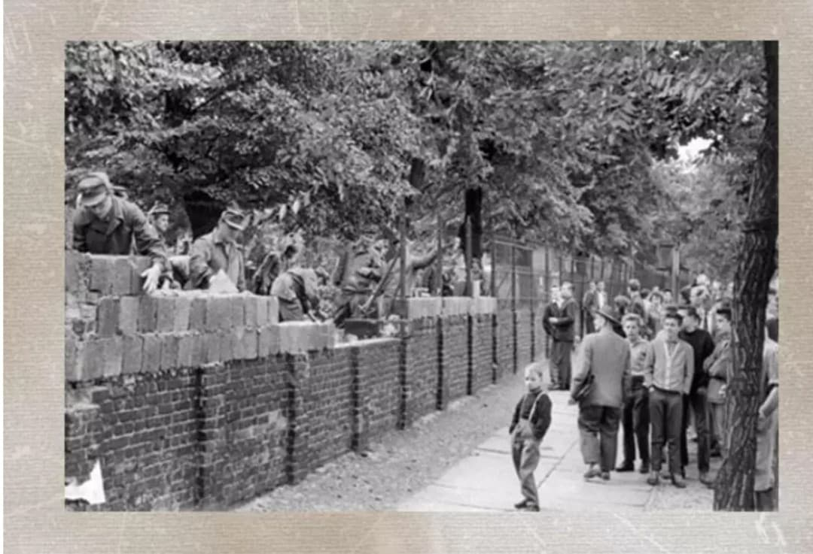
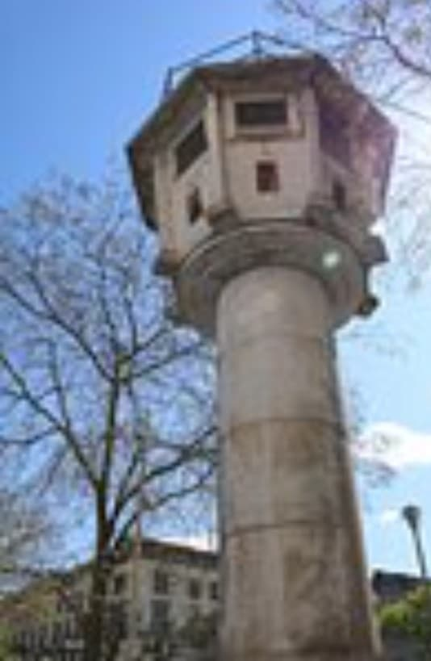
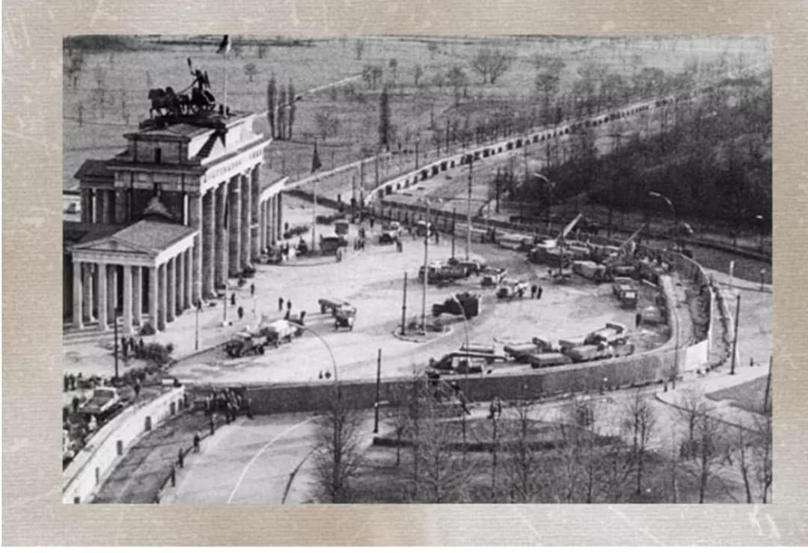
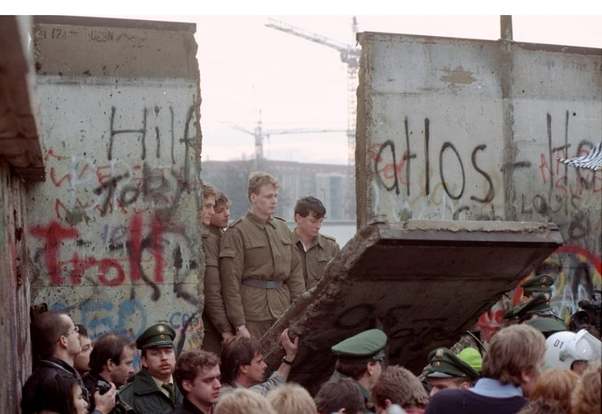

Le Mur de Berlin, érigé en 1961 au cœur de la capitale allemande, est l’un des symboles les plus forts de la division de l’Europe après la Seconde Guerre mondiale. Né des tensions entre les puissances victorieuses de 1945, il matérialise la rupture entre les deux blocs : l’Ouest démocratique et l’Est communiste placé sous influence soviétique.
Pendant près de trois décennies, ce mur a séparé familles, quartiers et destins, devenant le théâtre de drames humains, de tentatives de fuite et de confrontations idéologiques. Sa chute en 1989 marque la fin d’une époque et ouvre la voie à la réunification allemande.
Le Mur de Berlin ne peut pas être compris sans revenir à la Seconde Guerre mondiale. En mai 1945, l’Allemagne est vaincue, occupée et divisée par les Alliés. Le pays est découpé en quatre zones d’occupation : américaine, britannique, française et soviétique.
Berlin, la capitale, est elle aussi divisée en quatre secteurs, alors même qu’elle se trouve au cœur de la zone soviétique. Cette division est une conséquence directe de la guerre : elle vise à empêcher l’Allemagne de redevenir une puissance agressive et à garantir le contrôle des vainqueurs sur son avenir.
Très vite, les tensions entre les Alliés occidentaux et l’Union soviétique transforment cette division en frontière idéologique. La Seconde Guerre mondiale débouche sur une nouvelle période : la Guerre froide.

La carte montre la division de l’Allemagne en RFA (République Fédérale d’Allemagne, à l’Ouest) et RDA (République Démocratique Allemande, à l’Est), ainsi que la séparation de Berlin-Ouest et Berlin-Est. Les anciennes zones d’occupation de 1945 structurent toute la période 1945–1990.
En 1949, la division de l’Allemagne devient officielle : à l’Ouest, la République Fédérale d’Allemagne (RFA), démocratique et alliée des États‑Unis, du Royaume‑Uni et de la France ; à l’Est, la République Démocratique Allemande (RDA), État communiste placé sous l’influence directe de l’Union soviétique.
Berlin, située en plein territoire est‑allemand, reste une ville coupée en deux : Berlin-Ouest, enclave occidentale, et Berlin-Est, capitale de la RDA. Cette situation fait de Berlin un point de tension permanent entre les deux blocs.
Entre 1949 et 1961, plus de 2,7 millions d’Allemands de l’Est fuient vers l’Ouest, souvent en passant par Berlin. Cette fuite massive fragilise la RDA : elle perd des travailleurs qualifiés, des médecins, des ingénieurs, des professeurs. Le régime communiste est menacé de l’intérieur.
Pour stopper l’exode, les autorités de la RDA, avec l’accord de Moscou, décident de fermer Berlin. Dans la nuit du 12 au 13 août 1961, des soldats, des policiers et des ouvriers installent des barbelés, bloquent les rues, coupent les lignes de tramway et de métro. Très vite, ces barrières provisoires sont remplacées par un mur de béton.
L’opération est parfois surnommée « Muraille de Chine » dans la presse occidentale : une frontière massive, brutale, qui coupe une ville en deux et sépare des familles, des amis, des quartiers entiers.

Sur cette photo, des Berlinois de l’Ouest observent les soldats de la RDA en train de construire le mur. En quelques heures, des rues autrefois ouvertes deviennent des frontières infranchissables. Des familles se retrouvent séparées du jour au lendemain.

Les ouvriers posent des blocs de béton sous la surveillance de forces armées. Le mur n’est pas seulement une construction physique : il est le symbole d’un régime qui enferme sa population pour l’empêcher de partir.

La longue section de béton montre l’ampleur du dispositif. Le Mur de Berlin n’est pas un simple mur : il s’accompagne de fossés, de clôtures, de projecteurs, de miradors, de patrouilles armées. L’ensemble forme ce que l’on appelle la bande de la mort.
Le Mur de Berlin est en réalité un système complet de fortifications :
Toute personne tentant de franchir le mur risque d’être arrêtée, abattue ou emprisonnée. On estime à plus de 140 le nombre de personnes mortes en tentant de passer de l’Est à l’Ouest, même si le chiffre exact reste discuté.

La tour de guet de la RDA est l’un des éléments les plus visibles de ce système. Depuis ces postes d’observation, les gardes surveillent la frontière, prêts à intervenir en cas de tentative de fuite. Ces tours sont devenues des symboles de la surveillance permanente imposée par le régime.
Berlin est au cœur de la Guerre froide. La ville est à la fois une vitrine et un champ de bataille symbolique entre les deux blocs. À l’Ouest, on montre la liberté, la prospérité, la consommation ; à l’Est, on affirme la légitimité du régime socialiste et la lutte contre le “fascisme” et le “capitalisme”.
Le Mur de Berlin devient un symbole mondial. Les dirigeants occidentaux s’y rendent pour prononcer des discours marquants, comme John F. Kennedy en 1963 (« Ich bin ein Berliner ») ou Ronald Reagan en 1987 (« Mr. Gorbachev, tear down this wall! »).

La porte de Brandebourg, ancien symbole de l’unité de Berlin, se retrouve coincée dans la zone frontalière. Le mur passe juste derrière, transformant ce monument historique en décor de la division du pays.
Malgré le danger, de nombreux habitants de la RDA tentent de franchir le mur :
Certaines tentatives réussissent, d’autres se terminent tragiquement. Le mur devient le symbole d’un régime qui doit enfermer sa population pour survivre.
À la fin des années 1980, la RDA est en crise : économie en difficulté, contestation intérieure, pression internationale, réformes en Union soviétique (perestroïka, glasnost). Les manifestations se multiplient, notamment à Leipzig et Berlin.
Le 9 novembre 1989, une conférence de presse confuse laisse entendre que les restrictions de voyage sont levées. Des milliers de Berlinois se rendent aux points de passage. Les gardes, dépassés, finissent par ouvrir les barrières.
Le mur est alors franchi, puis démantelé. Des sections sont abattues, des morceaux sont conservés comme souvenirs. La chute du Mur de Berlin marque la fin symbolique de la Guerre froide en Europe.

La destruction du mur est un moment de joie collective. Des habitants de l’Est et de l’Ouest se retrouvent, les frontières s’ouvrent, et l’Allemagne entame son processus de réunification, officiellement achevé en 1990.
Dans le cadre du Musée HOP WW2, le Mur de Berlin est présenté comme une conséquence directe de la Seconde Guerre mondiale. Sans la défaite de l’Allemagne, la division du pays, la création de la RFA et de la RDA, et la confrontation entre les blocs Est et Ouest, il n’y aurait pas eu de mur.
Cette fiche permet de relier les événements de 1939–1945 à ceux de 1961–1989, en montrant que la Seconde Guerre mondiale ne s’arrête pas en 1945 : elle continue de produire des effets pendant des décennies, jusqu’à la fin de la Guerre froide.
Le Mur de Berlin est ainsi intégré dans la section Histoire & Mémoire, aux côtés des fiches sur la France de Vichy, la France Libre, la Shoah, les institutions internationales et la reconstruction de l’Europe.
Page du Musée HOP WW2 – Section Mur de Berlin & Guerre froide